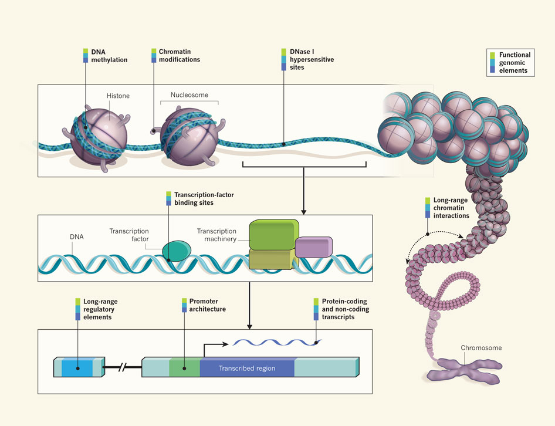

<!doctype html>
<html lang="en">

	<head>
		<meta charset="utf-8">

		<title>ChIP-seq data analysis</title>

		<link rel="stylesheet" href="../../assets/reveal.js/css/reveal.css">
		<link rel="stylesheet" href="../../assets/reveal.js/css/theme/simple.css" id="theme">

		<!-- Code syntax highlighting -->
		<link rel="stylesheet" href="../../assets/reveal.js/lib/css/zenburn.css">

		<link rel="stylesheet" href="../../assets/css/slide_custom.css" id="theme">

		<!-- Printing and PDF exports -->
        <script>
          if( window.location.search.match( /print-pdf/gi ) ) {
            var link = document.createElement( 'link' );
            link.rel = 'stylesheet';
            link.type = 'text/css';
            link.href = '../../assets/reveal.js/css/print/pdf.css';
            document.getElementsByTagName( 'head' )[0].appendChild( link );
          }
        </script>
		<!--<script>
            if (window.location.search.match(/print-pdf/gi)) {
                document.write('<link rel="stylesheet" href="css/pdf.css" type="text/css">');
            }
        </script>-->

		<!--[if lt IE 9]>
        <script src="../../assets/reveal.js/lib/js/html5shiv.js"></script>
        <![endif]-->
	</head>

	<body>
		<div class="reveal">
            <div class="slides">
                <section data-markdown>
                    <script type="text/template">
                        ## Welcome!

                        

                        The easiest way to **navigate** this slide deck
                        is **by hitting `[space]` on your keyboard**

                        You can also navigate with arrow keys, but be careful because some
                        slides can be nested inside of each other (vertically)
                    </script>
                </section>

                <section data-markdown>
                    <script type="text/template">
                        # ChIP-seq data analysis
                    </script>
                </section>

                <section data-markdown>
                    <script type="text/template">
                        ## Requirements

                        Before diving into this slide deck, <br/>
                        we recommend you to have a look at:

                        1. [NGS Quality control](../../NGS-QC/slides/index.html)
                        2. [NGS mapping](../../NGS-QC/slides/index.html)
                    </script>
                </section>

                <section>
                    <section data-markdown>
                        <script type="text/template">
                            # What is ChIP sequencing?
                        </script>
                    </section>

                    <section data-markdown>
                        <script type="text/template">
                            ### Where my data comes from?

                            

                            <small>
                            [*Ecker et al, Nature, 2012*](http://www.nature.com/nature/journal/v489/n7414/full/489052a.html)
                            </small>
                        </script>
                    </section>

                    <section data-markdown>
                        <script type="text/template">
                            ### Chromatin immuno-precipitation

                            

                            <small>
                            [*Szalkowski & Schmid, Brief Bioinform, 2011*](http://bib.oxfordjournals.org/content/12/6/626.long)
                            </small>
                        </script>
                    </section>
                </section>

                <section>
                    <section data-markdown>
                        <script type="text/template">
                            ## How to analyze ChIP-seq data?
                        </script>
                    </section>

                    <section data-markdown>
                        <script type="text/template">
                            ### Common procedures for ChIP-seq data analysis

                            

                            <small>
                            [*Kidder et al, Nature Immunology, 2011*](http://www.nature.com/ni/journal/v12/n10/full/ni.2117.html)
                            </small>
                        </script>
                    </section>
                </section>


                <section data-markdown>
                    <script type="text/template">
                        ### Tutorial

                        - [Tutorial 1](tutorial1.html)
                        - [Tutorial 2](tutorial1.html)
                    </script>
                </section>
			</div>

		</div>

		<script type="text/javascript" src="../../assets/reveal.js/lib/js/head.min.js"></script>
        <script type="text/javascript" src="../../assets/reveal.js/js/reveal.js"></script>
        <script type="text/javascript">
            Reveal.initialize({
                slideNumber: !window.location.search.match(/print-pdf/gi),
                history: true,

                theme: Reveal.getQueryHash().theme,
                transition: Reveal.getQueryHash().transition || 'concave',

                dependencies: [
                    { src: '../../assets/reveal.js/lib/js/classList.js', condition: function() { return !document.body.classList; } },
                    { src: '../../assets/reveal.js/plugin/markdown/marked.js', condition: function() { return !!document.querySelector( '[data-markdown]' ); } },
                    { src: '../../assets/reveal.js/plugin/markdown/markdown.js', condition: function() { return !!document.querySelector( '[data-markdown]' ); } },
                    { src: '../../assets/reveal.js/plugin/highlight/highlight.js', async: true, callback: function() { hljs.initHighlightingOnLoad(); } },
                    { src: '../../assets/reveal.js/plugin/notes/notes.js', async: true },
                ]
            });
        </script>

	</body>
</html>
